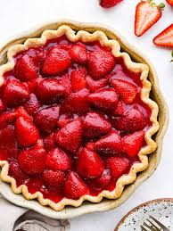

The Ultimate Chocolate Cake

Wow, not too sweet and really moist. The frosting was just right! My husband loved it.
Bananas Foster

A fantastic recipe for Bananas Foster that had everyone begging for more! I used Meyer's Dark Rum, and added a squeeze of fresh lime. It was gorgeous!.
Strawberry Pie
I'd never had a strawberry pie made with jello before. The recipe was easy enough for a beginner cook to follow!.